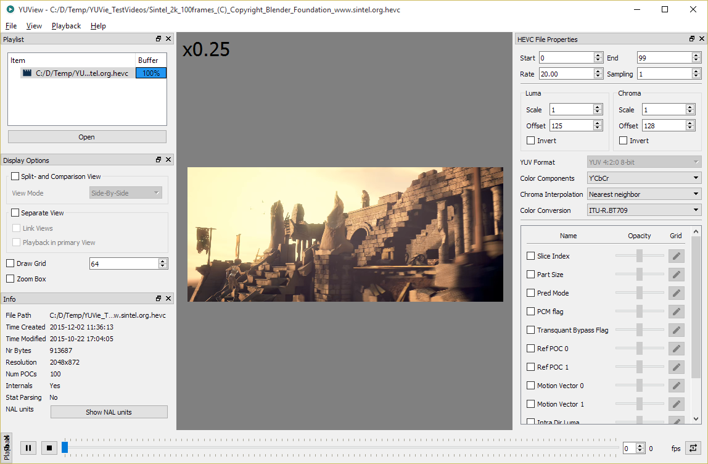
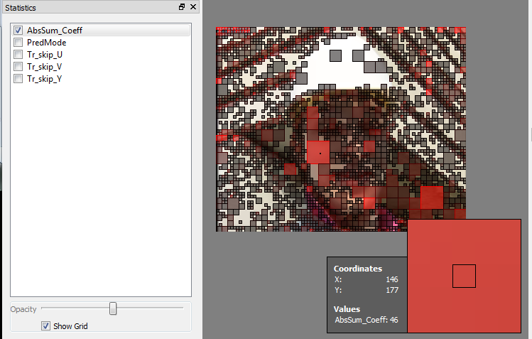

Welcome to YUView
YUView is a Qt based YUV player with an advanced analytic toolset for Linux, Windows and Mac. At its core, YUView is a powerful YUV player that can open and show almost any YUV format. With its simple interface it is easy to navigate through sequences and inspect details and a side by side and comparison view can help to spot differences between two sequences. A sophisticated statistics renderer can overlay the video with supplemental information. More features include playlists, support for visual tests and presentations, support of compressed formats (through libde265 and FFmpeg), support for raw RGB files as well as image files and image sequences, and many more. On this page, some of the supported features are highlighted. Further information can be found in the YUV help in the application itself or in our wiki.
Getting Started
We provide precompiled YUView binaries for Windows and Mac on our releases page. For Ubuntu and Arch Linux we also provide packages. If none of these options fit you, compiling YUView is easy. Now let's get to YUView itself:

The basic features
At its core, YUView is a powerful YUV player with all the fundamental playback functionalities: Playing, seeking and repeat modes. The list on the left represents the playlist. It contains all the opened items. Firstly, besides raw YUV sequences, it can contain RGB files, image sequences and compressed files. Secondly, there are text and image items, which are shown for a specific amount of time. Lastly, there are items that can contain multiple items themselves: Difference items can calculate the difference of two items and Overlay items can render multiple items on top of- or next to each other.
Supported Input Formats
Since YUView is a YUV player, it supports a wide variety of YUV formats and subsamplings as well as different conversions to RGB. Namely they are:
- Subsampling: 4:4:4, 4:2:2, 4:2:0, 4:4:0, 4:1:0, 4:1:1, 4:0:0
- Bit depth: 8-16 bit
- Color conversion: ITU-R.BT709, ITU-R.BT601, ITU-R.BT2020
- Chroma Interpolation using nearest neighbor or bilinear interpolation
- Freely configurable chroma positions and plane order
- Support for packed YUV formats
In addition to YUV files, YUView also supports various other formats that provide raw YUV or RGB data:
- RGB files: Raw RGB data files at various formats and bit depths are also supported. Like YUV files, their format is freely configurable and packed formats are also supported.
- h.265/HEVC files: With the help of libde265, YUView can directly open and decode h.265/HEVC compressed files in the Annex-B bitstream format. In addition to the decoded video, YUView can also display additional internals from the decoding process like prediction modes, motion vectors, CU and TU trees and much more.
- Almost any other video file: YUView has support for FFmpeg. This means that you can open almost any compressed video file from almost any container directly in YUView. If supported by the decoder, YUView will even show motion vectors.
- Images and image sequences: YUView can open any image format that is supported by Qt. YUView understands image sequences that contain a number at the end of the file name (e.g. img000.png, img001.png ...).
Overlay Statistics
YUView can overlay a video with additional statistics. This additional data may be generated by an encoder, decoder or any other means. It can carry arbitrary scalar values or vectors which apply to a certain block in the frame. Useful applications are for example to overlay the frame with prediction modes, motion vectors or bit cost. YUView can obtain this data from a '.csv' file in a special format (see wiki) or from a video decoder directly. Below, you can see an example where the Luma intra direction is rendered on top of a decoded HEVC bitstream:

Inspecting Differences
Besides the obvious features like zooming, there are more features to help in the closer inspection of items and the differences between them:
- Difference Items: With the difference item, you can directly calculate the difference between two items. If the formats of both items match, the difference will be calculated directly in the source domain. Just create a new difference sequence and drag/drop two sequences onto the difference item. Alternatively, select two items in the playlist and select (right click)->difference.
- Split- and comparison view: Select two items in the playlist and activate the split- and comparison view. Both items are shown side by side with a separator in the middle that can be dragged left and right.
In this example, the original sequence on the left and the error signal (the difference between the compressed version and the original) on the right are compared.

Support and Contact
Having trouble with this project? Did you find a bug or do you have a suggestion for a feature? Please let us know on our Github project page: YUView on Github.